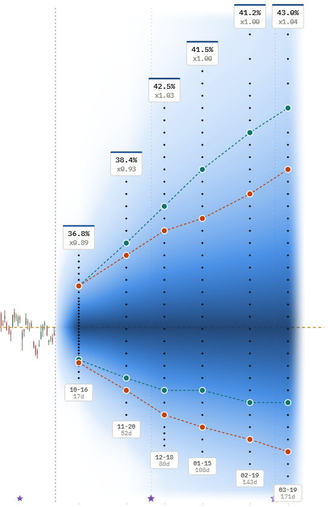
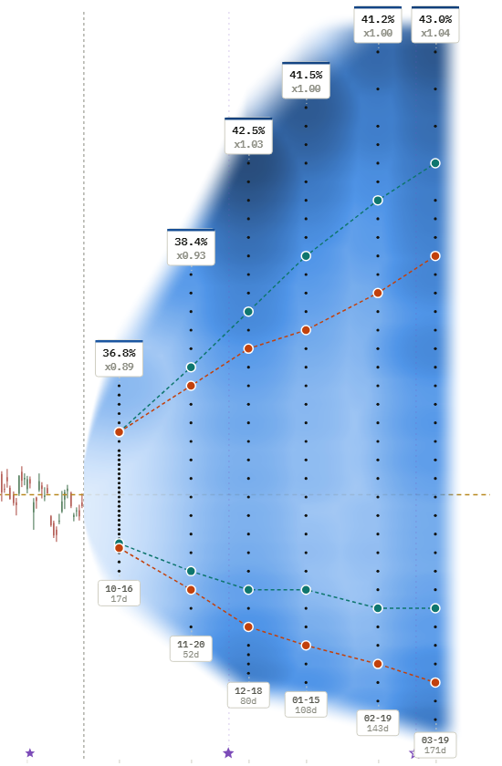
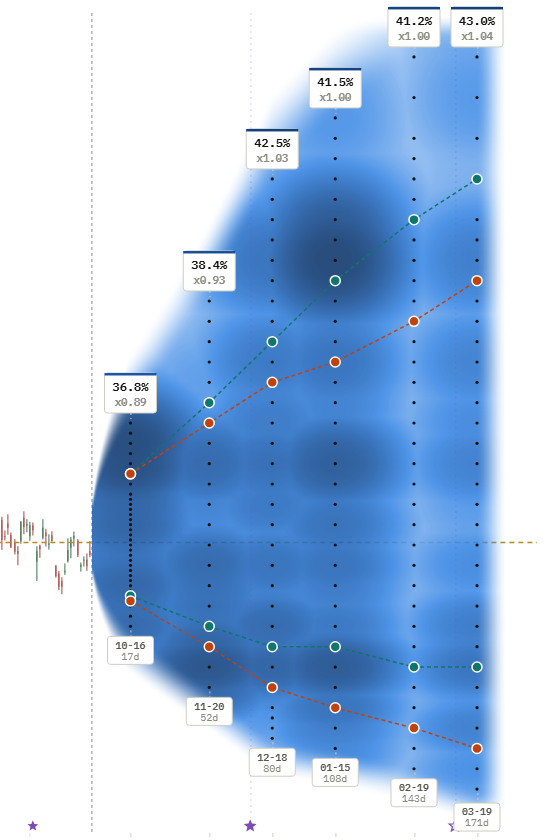
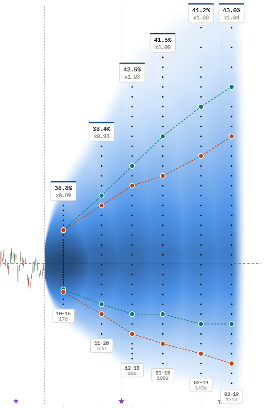
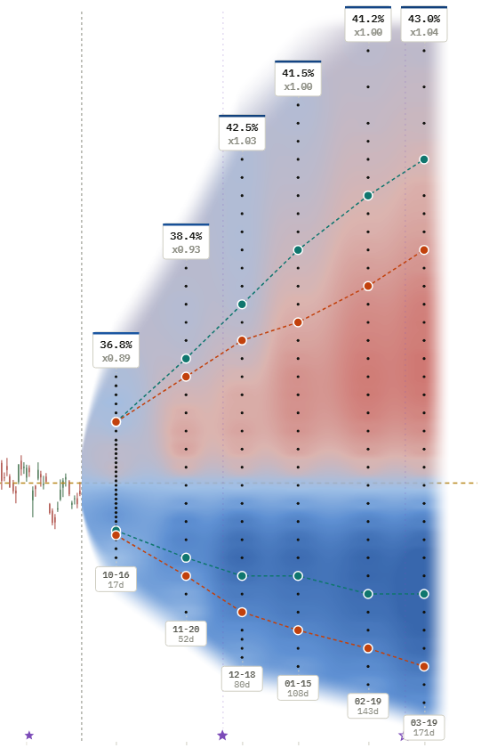
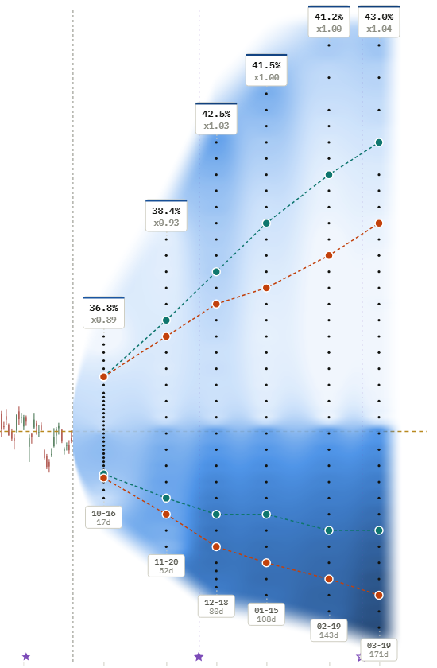
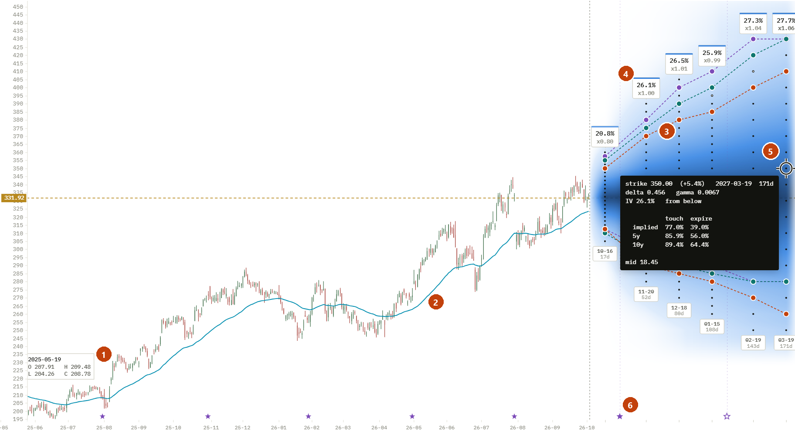
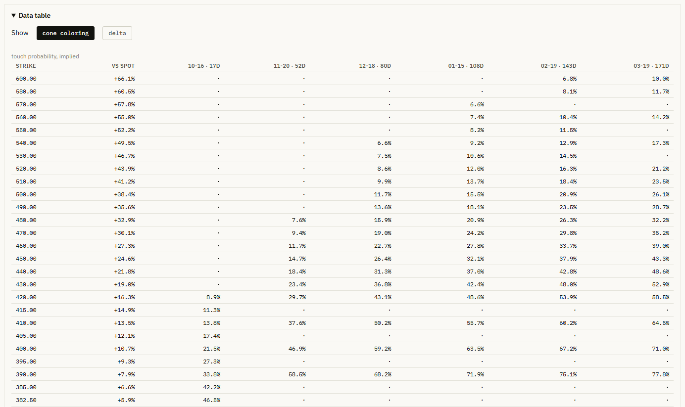

Probability, premium and positioning heatmaps for any stock with options.
OptionsCone turns the option chain into heatmaps on the price chart: touch and expiry probabilities, implied volatility, open interest, spreads, time value and premium relative to risk, across the option chain of the next six months. It compares what the option market implies with what the stock's own history says. For option traders and for anyone who holds stocks. Free and open source, for Windows.












What you see
One chart for the whole option chain
The cone
Every dot is a listed contract. The color behind it is the probability that the price touches that strike before that expiry: dark near the money, fading to pale where a touch becomes unlikely. The cone widens with time because the price has longer to travel.
Three models
Implied from the option prices, with each contract's own volatility.
5y and 10y from a block bootstrap of the stock's daily history, intraday highs and lows included.
Contour lines
Pick a probability, say 30%, and each model draws a line through the listed strikes that match it at every expiry, above and below spot. Where the lines separate, the market and the stock's past disagree.


- Candle readout. Open, high, low and close of the day under the pointer.
- Price chart tools. Two moving averages, trend and horizontal lines, daily or weekly candles, ten years of history.
- Contour lines. The strikes that match your chosen probability at every expiry, one line per model.
- Expiry badges. Model-free implied volatility of each expiry, and its ratio to the stock's realized volatility.
- Selected contract. Click a dot and its tooltip stays open: delta, gamma, implied volatility, and touch and expire probabilities from the option market and from the last 5 and 10 years.
- Earnings dates. Filled where confirmed, hollow where projected; an expiry that spans a report prices a different risk.
What it is for
Not only for option traders
Option prices contain the market's view of how far a stock can move. OptionsCone turns that view, and the stock's own history, into plain probabilities you can use whether or not you ever trade an option.
Build realistic scenarios
- How far can the stock plausibly move by a given date, up and down?
- What are the chances my price target or my break-even is reached?
- How much does the market price around the next earnings date?
Manage risk at entry
- How likely is a stop level to be hit during my holding period?
- Where are large positions sitting, and are the quotes tight enough to trade?
- Is there an earnings date inside my horizon?
Identify opportunities
- Where does the market price in a higher probability than the stock realized?
- Which strikes pay a seller the most premium per unit of historical risk?
- Where does time value melt fastest per day?
See worked examples with real numbers. The app shows probabilities, not recommendations.
The numbers
Every value in a table
The data table lists whatever the cone shows, strike by expiry, for the contracts that are actually listed. Switch it to delta to compare a whole chain with your broker at once.
A data quality report shows how many quotes passed the checks, by moneyness, and the Methods section explains every calculation. Nothing is hidden behind a score.

Under the hood
Built to be checked
Each contract's implied volatility is solved on an American binomial tree with discrete dividends. Impossible quotes are removed and doubtful ones are flagged. The bootstrap keeps fat tails and calm and turbulent stretches of the real history.
Every chain you download is archived on your computer, so a history of the option market builds up for every ticker you follow. The code is open for anyone to read. Read the methods.
Get started
Three steps
- Download
OptionsCone.exefrom the releases page and run it. If Windows warns about an unknown app, click More info, then Run anyway. - Type a ticker, for example
AAPL, and press download. The first download takes a minute or two. - Read the cone. Set the probability you care about and compare the three lines. The manual explains every control.
Questions
Frequently asked
What is the probability of touch?
The probability that the stock price reaches a given strike at any time before expiry, even if it moves away again afterwards. It is always at least as high as the probability of finishing beyond the strike, and often about twice as high.
Do I need to trade options to use it?
No. The option market is only the source of one of the three views. If you hold stocks, the same chart tells you how likely a stop level, a price target or your break-even is to be reached within a given time, by the market's pricing and by the stock's own history. See the use cases.
What is the difference between the implied and the bootstrap models?
The implied model uses option prices, so it reflects what the market charges for the risk today. The bootstrap models replay the stock's own last five or ten years in random blocks of twenty trading days. They describe what happened, not what the market expects. Where they differ, the option market is pricing a move the history did not produce, or the other way round.
Is OptionsCone free?
Yes. It is free and open source under the GNU Affero General Public License v3.0. There is no account, no subscription and no API key.
Where does the data come from, and is it real time?
Option chains, prices and earnings dates come from Yahoo Finance through the yfinance library, fetched directly by your computer. Option quotes are delayed by about 15 minutes. Outside US trading hours the app uses the newest download taken during the session.
Why does the app say a chart is "not reliable"?
Outside US trading hours the option feed returns placeholder prices, so a chain downloaded then gives a distorted cone. The app always uses the newest download taken during trading hours. If a ticker has none yet, it shows its chart with a red warning; download it again between 9:30 and 16:00 New York time, usually 15:30 to 22:00 in Central Europe.
Does the app send my data anywhere?
No. It contacts Yahoo Finance for market data and Google Fonts for its typeface. There is no telemetry and no account. Everything you download stays in a folder on your computer.
Why does Windows show a warning when I start it?
The executable is not code-signed, which costs money every year. SmartScreen warns about any unsigned program it has not seen often. Click More info, then Run anyway. The source code and the build script are public, and each release lists a SHA-256 checksum of the file.
Does it run on Mac or Linux?
The ready-made download is for Windows 10 and 11. The source is plain Python and can be run elsewhere with the steps in the README, but only Windows has been tested.
Which tickers work?
Any US stock or ETF with listed options on Yahoo Finance. ETFs have no earnings dates, so no earnings markers appear for them.
Is this financial advice?
No. All probabilities are estimates from market prices or from the past. They are not forecasts, and the data can be delayed, incomplete or wrong.